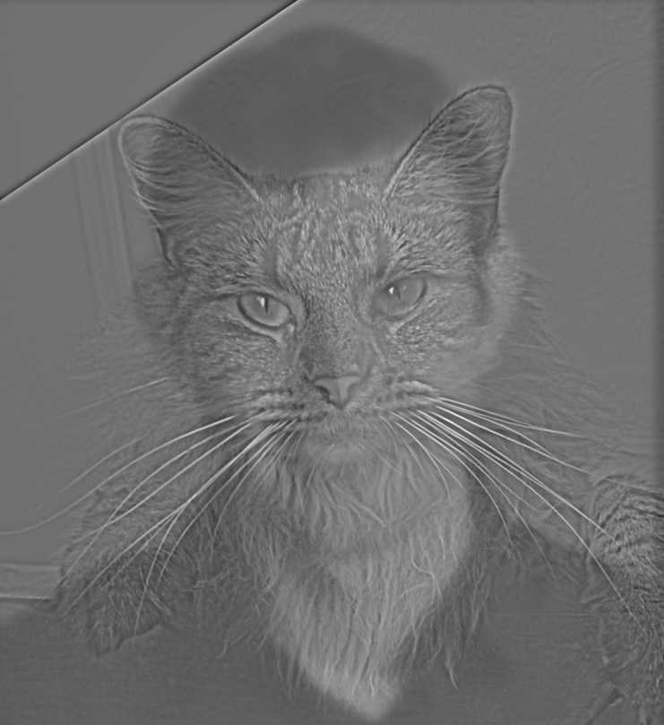
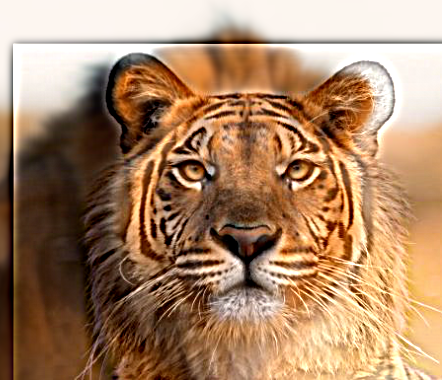
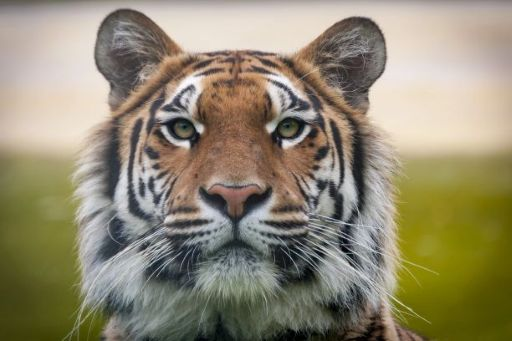

Here's a photo of myself in the Mount Hood National Rainforest, rendered in grayscale.
Here's the photo, convolved with a 9x9 box filter and the finite difference filters DX and DY. Note that all three convolution methods (four loops, two loops, and scipy) yielded the same results. These are the results from the two loop version. Additionally, to properly visualize the derivative images, I normalized their values to be within the range [0, 1], so a derivative of zero corresponds to gray.
9x9 Box Filter
DX Filter
DY Filter
Below is the code I wrote to implement convolution with four loops and with two loops. In general, there are three ways to handle boundaries: no padding, which decreases the size of the output ("valid"), just enough padding to maintain the output size ("same"), or enough padding to allow the kernel to slide over all possible positions over the image ("full"). I implemented "same" padding, which pads the image with k_size // 2 zeros on all sides. This likely doesn't perform as well as symmetric padding, as the pixels near the borders will get dimmed.
I used IPython's %timeit to time each convolution method. I tested each method with the 9x9 box filter on the above selfie (which is a 960 x 540 image). Four loops was the slowest, taking 49.7 (±5.49) seconds per iteration; two loops took 5.61 (±0.312) seconds per iteration; and SciPy's convolution took 139 (±13.1) ms per iteration. The two-loop method was surprisingly slow, even for a moderately-high resolution image.
def convolve_loops(image : ndarray, kernel : ndarray, loops : int = 2):
# Copy the image and flip the kernel.
image = image.copy()
kernel = kernel[::-1, ::-1]
kh, kw = kernel.shape
# Pad the image.
pad_h, pad_w = kh // 2, kw // 2
image = np.pad(image, ((pad_h, pad_h), (pad_w, pad_w)), mode='constant')
# Create the convolved image.
convolved = np.zeros(image.shape)
ch, cw = convolved.shape
if loops == 4:
for cy in range(ch):
for cx in range(cw):
for ky in range(kh):
for kx in range(kw):
convolved[cy, cx] += kernel[ky, kx] * image[cy + ky, cx + kx]
elif loops == 2:
for cy in range(ch):
for cx in range(cw):
convolved[cy, cx] += np.sum(kernel * image[cy : cy + kh, cx : cx + kw])
return convolved
Part 1.2: Finite Difference Operator
Here's the original cameraman image, loaded in grayscale.
Here's the result of applying the finite difference operators DX and DY to the image. Notice that the DX filter captures changes in the x-direction, while the DY filter captures changes in the y-direction. Additionally, I calculated the magnitude of the gradient and set a threshold of 0.27 to detect edges. I picked this threshold experimentally. It's high enough to reduce background noise, but low enough to capture nearly all of the edges of the man and the camera.
Magnitude of Gradient (T=0.27)
DX Filter
DY Filter
Part 1.3: Derivative of Gaussian Filter
Here are the Gaussian and Derivative-of-Gaussian filters. I used a standard deviation of sigma = 2.0 and a kernel size of 13 x 13. This resulted in better edge detection than Part 1.2.
Gaussian Filter
Derivative-of-Gaussian-x Filter.
Derivative-of-Gaussian-y Filter.
Here's the result of applying these filters to the cameraman image.
Gaussian Filter
Derivative-of-Gaussian-x Filter.
Derivative-of-Gaussian-y Filter.
Here's the magnitude of the DoG_X and DoG_Y outputs together, using a threshold of 0.14. Notably, this is able to capture the same edges as the Finite-Difference filters, but has a lot less noise in between. This is likely because the Gaussian acts as a low-pass filter, so a lot of the high-frequency noise is blocked out, but because sharp edges contain frequencies from across the spectrum, they are still present here.
Magnitude of Gradient (T=0.14)
Part 2.1: Image "Sharpening"
I created an "unsharp" filter that combines the low frequencies of an image (obtained from a Gaussian filter) with its high frequencies (subtracting the low pass from the original), scaled up to become more prominent. We can express this sharpened image as image + α(image - g * image), where α > 0; the filter can then be written as k = (1 + α)e - α(g), where e is the unit impulse (the identity filter).
Here's the result of sharpening the Taj Mahal Image. I used a sigma value of 4.0 for the Gaussian blur and an alpha value of 2.0 (so the number of high frequencies was tripled). Note that I normalized the high frequencies to be in the range [0, 1] for visualization.
Original Image
Blurred Image (Sigma = 4.0)
High Frequencies (Normalized)
Sharpened Image (Alpha = 2.0)
Here's the result of me blurring, then re-sharpening a photo of the Campanile I took. For consistency, I blurred and then re-sharpened with the same sigma value of 4.0. Notice that it's able to get some of the detail back.
Original Image (Campanile)
Blurred Image (Sigma = 4.0)
Re-Sharpened Image (Sigma = 4.0, Alpha = 2.0)
Part 2.2: Hybrid Images
I used the provided alignment code to align the images, then applied a low-pass filter (a Gaussian kernel) to one image and a high-pass filter (a Laplacian-of-Gaussian kernel) to the other. The sigma-values for each kernel were chosen via experimentation. I scaled the high-frequency image by a factor alpha to make it more visible, then added it to the low-frequency image.
Derek and Nutmeg

Lion and Tiger

Compass and Clock
Here's a closer look at the process for the Lion and Tiger example. Here's the original images:
Lion (used for low frequencies)
Tiger (used for high frequencies)

Here's the FFT of each aligned image (before any sort of filtering). The diagonal line in the Lion FFT is due to the fact that its image was rotated slightly during alignment.
Lion FFT
Tiger FFT
Here's the FFT of each image post-filtering. Notice that for the lion, which had the low pass filter applied, most of the frequencies away from the origin are gone. While there are still some high frequencies along the axes, they are diminished. For the tiger, which had the high-pass filter, the contrast is low due to how few high frequencies there were, but we can see that there are fewer frequencies near the origin.
Low-passed Lion FFT
High-passed Tiger FFT
Here's the FFT of the aligned image, along with the aligned image for reference..
Hybrid FFT
Hybrid Image
Part 2.3: Gaussian and Laplacian Stacks
I implemented a function to create Gaussian and Laplacian stacks for a given image. Recall that a Gaussian pyramid is created by beginning with the original image, then repeatedly applying a Gaussian filter (to remove high frequencies) and downsampling the image. The Gaussian stack is similar, but no downsampling is performed. The Laplacian stack is then created by subtracting successive images from the Gaussian stack to capture the high-frequencies that are removed at each step. Below, I've displayed the Gaussian and Laplacian stacks for the apple and orange, as well as the Gaussian stack for the mask. Note that the Laplacian stack images were normalized before display.
Gaussian Stack for Apple, Orange, and Mask.
Laplacian Stack for Apple and Orange.
Part 2.4: Multiresolution Blending
For multiresolution blending, I used the Laplacian Stacks from part 2.3 for the two images and the Gaussian stack for the mask. Then, for each layer of the stacks, I combined the images, weighting image1 by mask1 and image2 by 1-mask1.
The Orapple, using a vertical seam.
My face on the wall of a building on campus, using an elliptical filter.